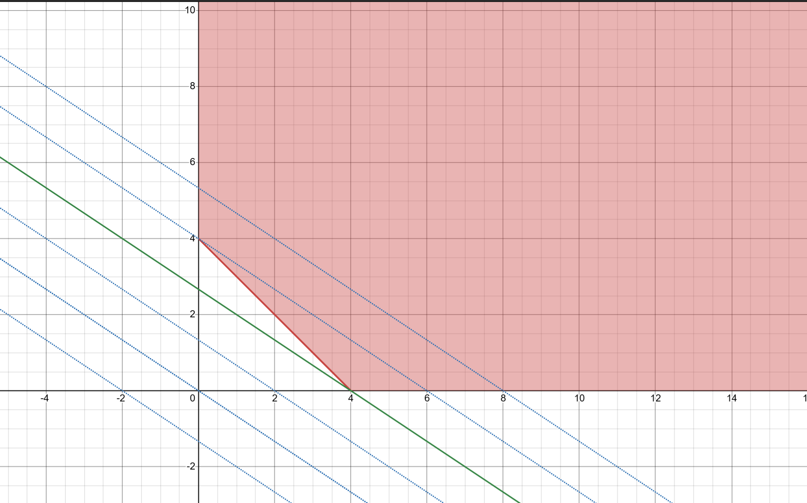
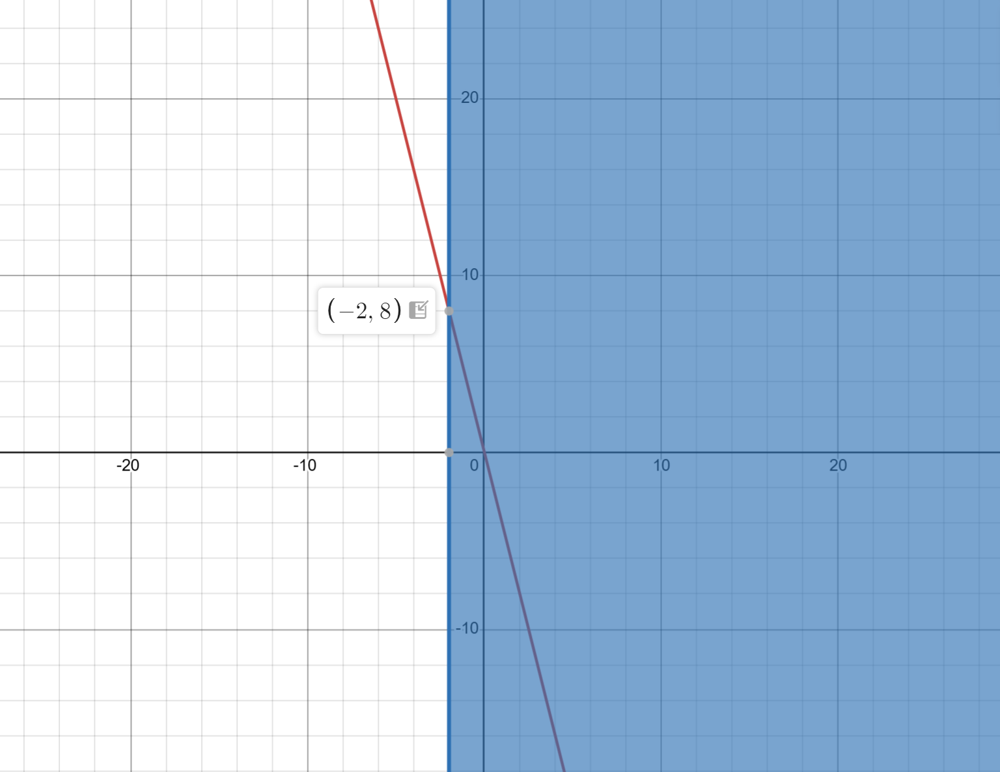

$ \min_{x} \quad f(x) = \f \\ \text{ s. t.: } \quad x_1 + x_2 \ge 4, \\ \quad \quad \quad \> x_1 \ge 0, \\ \quad \quad \quad \> x_2 \ge 0 \\ $
Область допустимых решений ограничена прямыми:
$x_1 + x_2 = 4$, $x_1 = 0$, $x_2 = 0$ и обозначена на рисунке красным цветом.
Целевая функция $f(x) = \f$ представлена семейством пунктирных прямых.
Минимум достигается в точке касания прямой области допустимых значений(зеленая прямая):
$x^* = (4, 0) \\$
$p^* = f(x^*) = 8 \\$

Найдем двойственную задачу.
Представим прямую задачу в виде задачи линейного программирования:
$$
\min_{x} \quad f(x) = c^\top x \\
\text{ s. t.: } \quad A x \ge b, \\
\quad \quad x_i \ge 0 \\
$$
Здесь $c = (2, 3)$, $A = (1, 1)^\top$, $b = 4$.
Двойственной задачей будет:
$$
\max_{\l} \quad g(\l) = -4\l, \\
\text{ s. t.: } \quad (1, 1)\l \ge (-2 , -3) \rArr \l \ge -2\\
$$
На графике полуплоскость $\l \ge -2$ изображена синим цветом,
целевая функция — красной прямой.

$\l^* = (-2, 8) \\$
$d^* = g(\l^*) = 8 = p^*\\$